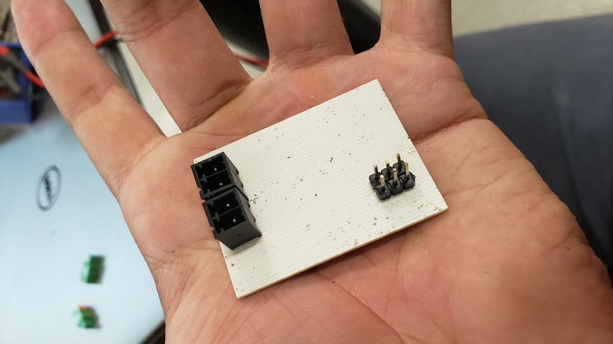

The measure //
For this practice we had to measure the energy consumption of an output device, so we went to the electronics lab, where we took a DC motor, a power supply and a multimeter to measure the variations of consumption that this motor presented.
We also play with Ohm's Law to calculate the current and compare it with the power source. We verify these measurements and the energy consumption of a DC motor being fed with different voltages, we take another smaller motor to be able to compare.

The H bridge//
Taking as inspiration the example of Neil on an output device of an engine, where the driver for the turn is done by H bridge, I chose to dig a little deeper and in this way design my bridge H to control an engine, I thought that later I would work for my final project where I will need to control an engine.
I designed the plate in Eagle, but a component I did not find it in the library, so I had to learn how to design your own component, use a footprint of the size of the component and modify it.

 8.36.02.png)
 9.10.43.png)
 9.14.11.png)
The result of the design was the following, which I later cut in the cnc minimill and proceeded to weld the components.
 13.24.01.png)

For the connections I used the Conn Terminal Block RCP2 POS but I did not find the component so I had to invent one very similar in real dimensions, the result was very good.

Finally the programming was missing, which, following the logic of the H bridge, I defined my 4 outputs for the motor and set a small delay to exchange the rotation of the motor. To achieve this, use my USB programmer to charge the program to my second board, which connects to this new output board, connect the motor and power it with a power supply.
Then modify the program so that the change of the motor address was through a button, the result was as follows.